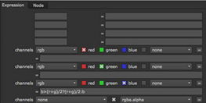

最终自动抑制从背景到前景主题的溢出。溢出控制用于抑制过度溢出或保留与过度抑制溢出相似的颜色。要调整溢出控制，请选中 泄漏 抑制 上的框 最后时刻 选项卡并单击 泄漏 标签:
• 酷 -使用此控件来调整冷色前景对象中的溢出量。用于重现通过溢出抑制算法改变的蓝色、绿色或青色。
• 温暖 -使用此控件来调整暖色前景对象中的溢出量。用于为蓝屏复制粉色、紫色和品红色，或为通过溢出抑制算法更改的绿色屏幕复制黄色和橙色。
• 中间色调 -使用此控件来调整中端前景对象中的溢出量。
• 亮灯 -使用此控件来调整明亮前景对象上的溢出量。
• 黑暗 -使用此控件来调整暗前景对象上的溢出量。
• 氛围 -使用此控件选择一种颜色，以微妙地影响可能包含溢出的区域中的前景对象。
• 强度 -使用此控件调整选定的强度 氛围 颜色。
• 背景 面纱 -此控件用于覆盖背衬颜色的自动抑制。Ultimatte 使用选定的背衬颜色将背衬抑制为黑色。自动设置没有抑制足够支持的迹象是 “面纱” 或一些背景区域的彩色雾。表明自动设置被抑制过多的背衬变暗或前景边缘和透明度不正确。在大多数情况下，此控件应保留默认设置。
提示:
中有几个节点
Nuke
您可以用于泄漏清除。例如，如果您使用的是绿屏图像，则可以在前景图像后添加一个表达式节点，并将绿色通道的表达式字段设置为:
G> (r b)/2？(r b)/2: g
同样，您可以通过将蓝色通道的表达式字段设置为:
B> (r g)/2？(r g)/2: b

您也可以使用 HueCorrect 节点进行 despill。有关更多信息，请参见
仅校正色调
.
|
|